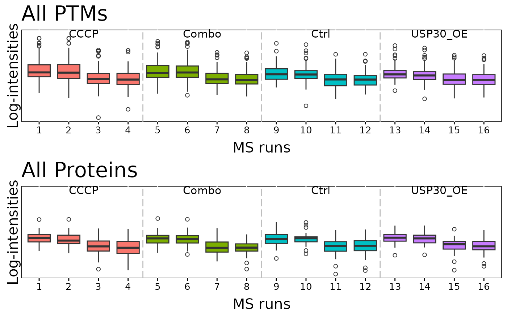
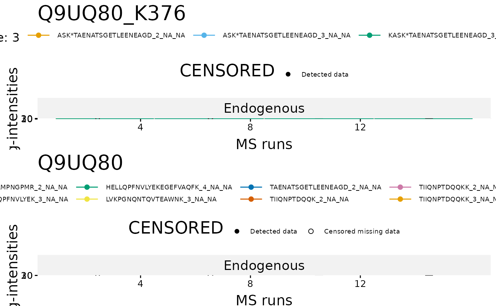
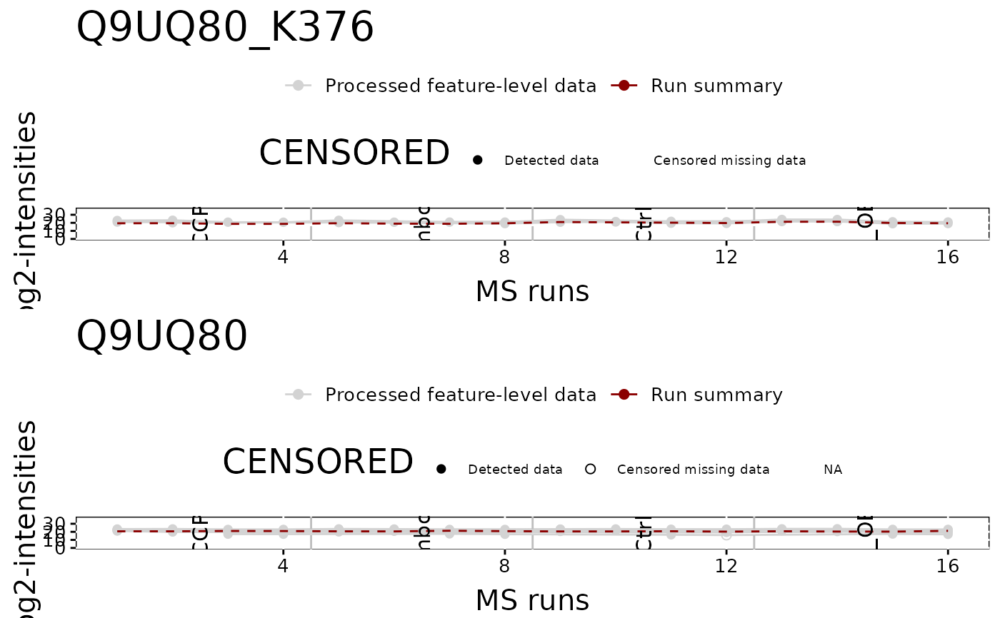

To illustrate the quantitative data and quality control of MS runs, dataProcessPlotsPTM takes the quantitative data from dataSummarizationPTM or dataSummarizationPTM_TMT to plot the following : (1) profile plot (specify "ProfilePlot" in option type), to identify the potential sources of variation for each protein; (2) quality control plot (specify "QCPlot" in option type), to evaluate the systematic bias between MS runs.
Usage
dataProcessPlotsPTM(
data,
type = "PROFILEPLOT",
ylimUp = FALSE,
ylimDown = FALSE,
x.axis.size = 10,
y.axis.size = 10,
text.size = 4,
text.angle = 90,
legend.size = 7,
dot.size.profile = 2,
ncol.guide = 5,
width = 10,
height = 12,
ptm.title = "All PTMs",
protein.title = "All Proteins",
which.PTM = "all",
which.Protein = NULL,
originalPlot = TRUE,
summaryPlot = TRUE,
address = "",
isPlotly = FALSE
)Arguments
- data
name of the list with PTM and (optionally) Protein data, which can be the output of the MSstatsPTM
dataSummarizationPTMordataSummarizationPTM_TMTfunctions.- type
choice of visualization. "ProfilePlot" represents profile plot of log intensities across MS runs. "QCPlot" represents box plots of log intensities across channels and MS runs.
- ylimUp
upper limit for y-axis in the log scale. FALSE(Default) for Profile Plot and QC Plot uses the upper limit as rounded off maximum of log2(intensities) after normalization + 3..
- ylimDown
lower limit for y-axis in the log scale. FALSE(Default) for Profile Plot and QC Plot uses the lower limit as floor of minimum log2(intensities) after normalization - 3, or 0 if that value is negative.
- x.axis.size
size of x-axis labeling for "Run" and "channel in Profile Plot and QC Plot.
- y.axis.size
size of y-axis labels. Default is 10.
- text.size
size of labels represented each condition at the top of Profile plot and QC plot. Default is 4.
- text.angle
angle of labels represented each condition at the top of Profile plot and QC plot. Default is 0.
- legend.size
size of legend above Profile plot. Default is 7.
- dot.size.profile
size of dots in Profile plot. Default is 2.
- ncol.guide
number of columns for legends at the top of plot. Default is 5.
- width
width of the saved pdf file. Default is 10.
- height
height of the saved pdf file. Default is 10.
- ptm.title
title of overall PTM QC plot
- protein.title
title of overall Protein QC plot
- which.PTM
PTM list to draw plots. List can be names of PTMs or order numbers of PTMs. Default is "all", which generates all plots for each protein. For QC plot, "allonly" will generate one QC plot with all proteins.
- which.Protein
List of proteins to plot. Will plot all PTMs associated with listed Proteins. Default is NULL which will default to which.PTM.
- originalPlot
TRUE(default) draws original profile plots, without summarization.
- summaryPlot
TRUE(default) draws profile plots with protein summarization for each channel and MS run.
- address
the name of folder that will store the results. Default folder is the current working directory.
- isPlotly
Parameter to use Plotly or ggplot2. If set to TRUE, MSstats will save Plotly plots as HTML files. If set to FALSE MSstats will save ggplot2 plots as PDF files The other assigned folder has to be existed under the current working directory. An output pdf file is automatically created with the default name of "ProfilePlot.pdf" or "QCplot.pdf". The command address can help to specify where to store the file as well as how to modify the beginning of the file name. If address=FALSE, plot will be not saved as pdf file but showed in window.
Examples
# QCPlot
dataProcessPlotsPTM(summary.data,
type = 'QCPLOT',
which.PTM = "allonly",
address = FALSE)

#> Drew the Quality Contol plot(boxplot) for all ptms/proteins.
#ProfilePlot
dataProcessPlotsPTM(summary.data,
type = 'PROFILEPLOT',
which.PTM = "Q9UQ80_K376",
address = FALSE)

#> Drew the Profile plot for Q9UQ80_K376 (1 of 1)

#> Drew the Profile plot for Q9UQ80_K376 ( 1 of 1 )